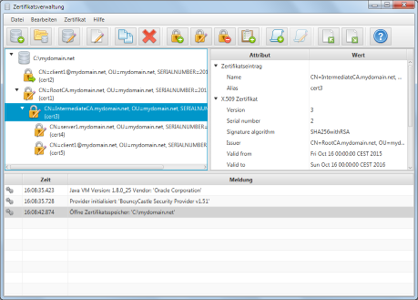

Überblick Zertifikatverwaltung
Die Zertifikatverwaltung unterstützt die Erzeugung und die Verwaltung von X.509 Zertifikaten und der zugehörigen
Elemente.
Die Anwendung organisiert Zertifikate hierfür in einem sogenannten Zertifikatspeicher. Dabei handelts es sich
technisch einfach um ein Datei-Verzeichnis. Der Name des Zertifikatspeichers wird dabei als Name für das
Verzeichnis verwendet. Die verschiedenen Zertifikat-Elemente sind innerhalb dieses Verzeichnisses in Unterverzeichnissen
organisiert.
Zertifikatspeicher-Anzeige
Dies ist das Hauptfenster der Anwendung. Der linke Bereich zeigt die im aktuell geöffneten Zertifikatspeicher
hinterlegten Zertifikate. Die Zertifikate sind dabei in einer Baumstruktur gemäß ihres Ausstellungs-Pfads
organisiert. Der rechte Bereich zeigt Detailinformationen zum aktuell ausgewählten Zertifikat. Im unteren Bereich
des Fensters werden Fehler- und Warn-Meldungen der Anwendung angezeigt

Zertifikatspeicher-Operationen
Um eine der folgenden Operationen zu starten, genügt den entsprechenden Menüeintrag auszuwählen oder
aber die entsprechende Schaltfläche in der Werkzeugleiste auszuwählen.
- Neuen Zertifikatspeicher anlegen
Legt einen neuen Zertifikatspeicher an.
- Existierenden Zertifikatspeicher öffnen
Öffnet einen existierenden Zertifikatspeicher indem das entsprechende Verzeichnis ausgewählt wird.
- Zertifikatspeicher-Einstellungen bearbeiten
Öffnet den "Zertifikatspeicher-Einstellungen bearbieten"-Dialog zum Anpassen
der Einstellung des aktuell geöffneten Zertifikatspeichers.
- Zertifikat-Einstellungen bearbeiten
Öffnet den "Zertifikat-Einstellungen bearbieten"-Dialog zum Anpassen
der Einstellung des aktuell ausgewählten Zertifikats.
- Eintrag kopieren
Kopiert den aktuell ausgewählten Eintrag in die Zwischenablage.
- Eintrag löschen
Löscht den aktuell ausgewählten Eintrag inklusive aller untergeordneten Einträge.
- Neues Zertifikat erstellen
Öffnet den "Zertifikat erzeugen"-Dialog zur Erzeugung eines neuen Zertifikats.
- Zertifikat neu signieren
Öffnet den "Zertifikat neu signieren"-Dialog zum erneuten Signieren des
Zertifikats.
- Zertifikat sperren
Öffnet den "Zertifikatsperre (CRL) anlegen/aktualisieren"-Dialog zur
Sperrung des aktuell ausgewählten Zertifikats.
- Zertifikatsperrliste (CRL) verwalten
Öffnet den "Zertifikatsperre (CRL) anlegen/aktualisieren"-Dialog zur
Bearbeitung der Zertifikatsperrliste des aktuell ausgewählten Zertifikats
- Zertifikatantrag (CSR) erzeugen
Öffnet den "Zertifikatantrag (CSR) erzeugen"-Dialog zur Erstellung eines
neuen Zertifikatantrags (CSR).
- Zertifikatantrag (CSR) neu signieren
Öffnet den "Zertifikatantrag (CSR) neu signieren"-Dialog zum erneuten
Signieren des ausgewählten Zertifikatantrags (CSR).
- Zertifikate importieren
Öffnet den "Zertifikate importieren"-Dialog, um existerende
Zertifikat-Objekte in den Zertifikatspeicher zu importieren.
- Zertifikate exportieren
Öffnet den "Zertifikate exportieren"-Dialog, um das ausgewählte
Zertifikat zu exportieren.